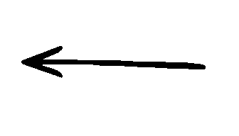
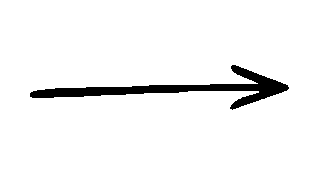
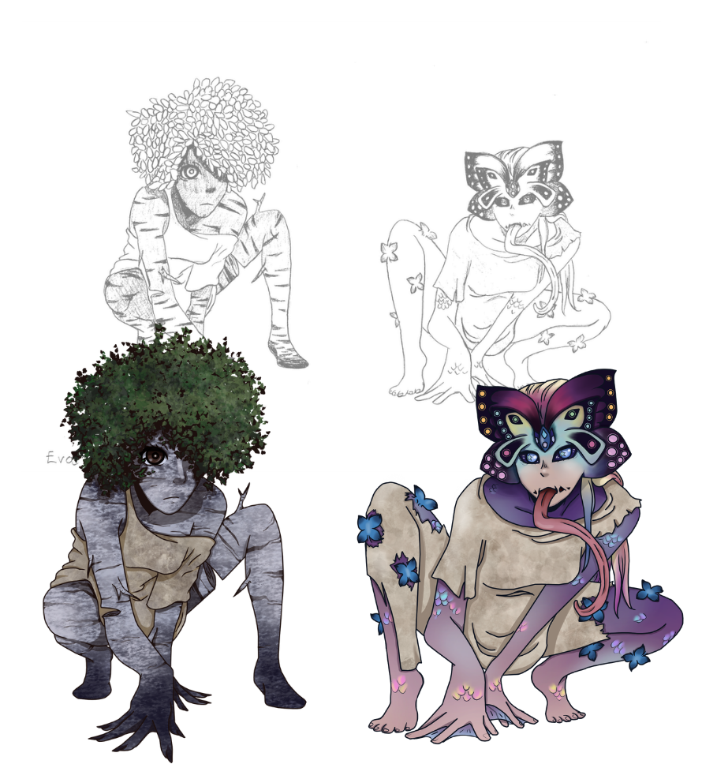
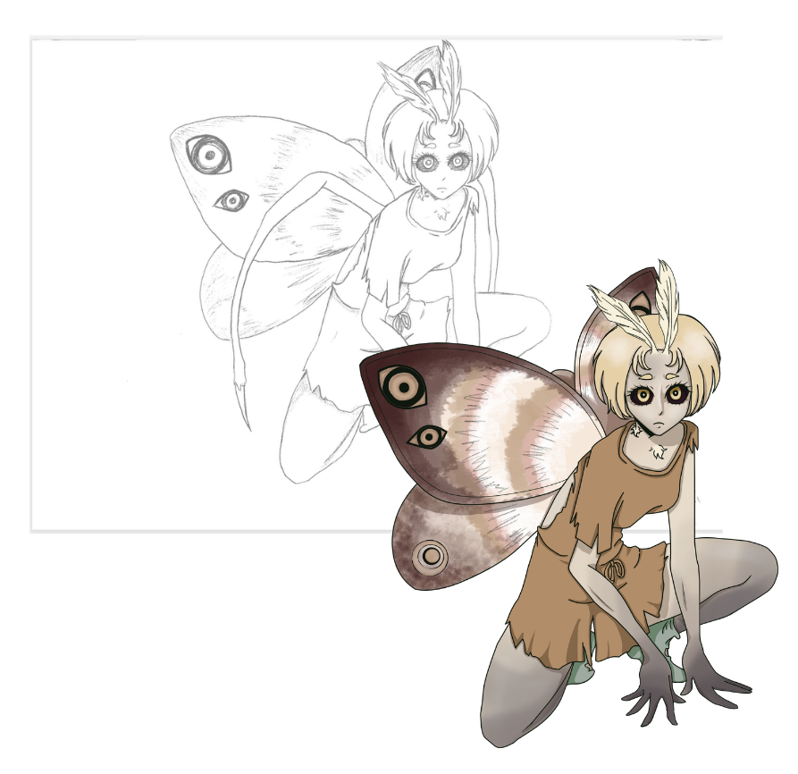

Side characters
Nilo's story:
There are two main side characters: Jenna and Henna
They have more expressions since their part in the story is bigger than most.
Other side characters get only one sprite per character.



1 sprite characters


Mina's side:
There are not really 'side characters' in her side of the story. There are these creatures in some of the backgrounds like the town people.